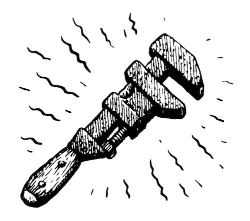
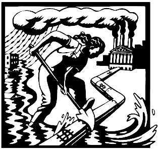
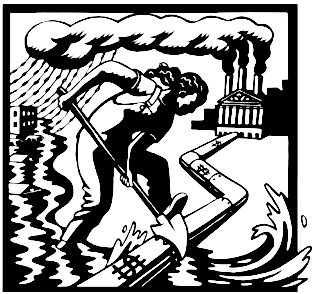

Sabotage means primarily: the withdrawal of efficiency
Luddism was a working-class movement opposed to the political consequences of industrial capitalism. The Luddites wanted technology to be deployed in ways that made work more humane and gave workers more autonomy. The bosses, on the other hand, wanted to drive down costs and increase productivity. Smashing looms and stocking frames was the tactic, not their goal. Their goal was to challenge not the technology itself, but rather the social relations that governed its use.
A neo-Luddite movement would understand no technology is sacred in itself, but is only worthwhile insofar as it benefits society. It would confront the harms done by digital capitalism and seek to address them by giving people more power over the technological systems that structure their lives.
You'll die of thirst before the rich stop swimming.
By refusing to collaborate with an oppressive order, by creating forms of resistance to any order that perpetuated massacres, devalued us as human beings, atomised societies and imperilled our very existence, we could then perhaps hope to salvage man from a conformist throwaway culture.
Every society has the criminals it deserves.
 

- A Field Guide to Monkeywrenching
- Infrastructure Sabotage
- Earth First! Mechanic's Guild
- The ALF Primer, pdf
- Ozymandias Sabotage Handbook, pdf
- Fractracker
incoming solarpunk technocracy